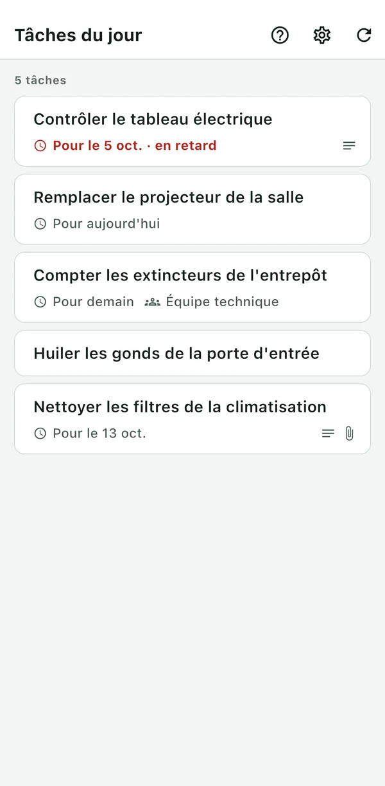
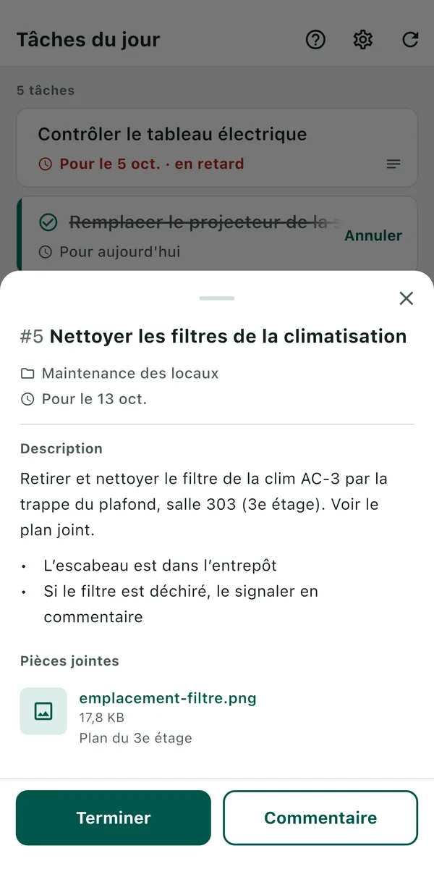

BeatMine for Redmine
Une application pour rendre compte, depuis votre iPhone et en quelques gestes, des tâches Redmine qui vous sont assignées. BeatMine n'est pas une application officielle de Redmine et n'a aucun lien avec les développeurs de Redmine.
- Seules vos tâches non terminées sont listées. Les tâches en retard apparaissent en rouge.
- Balayez une tâche vers la droite pour la terminer. Vous pouvez annuler aussitôt.
- Touchez une tâche pour envoyer un commentaire. Il est conservé dans l'historique de Redmine.


Ce qu'il vous faut
- Redmine 6.0, 6.1 ou 7.0.
- Un accès HTTPS à ce Redmine depuis cet appareil.
- L'API REST activée dans Redmine (un réglage de l'administrateur de Redmine).
- Votre clé d'API. Si vous ne l'avez pas sous la main, utilisez « Obtenir la clé d'API dans Redmine » sur l'écran de connexion.
Les environnements non pris en charge sont listés dans « Non pris en charge ».
Pour commencer
- Ouvrez l'application et saisissez l'URL de votre Redmine.
- Touchez « Obtenir la clé d'API dans Redmine ». Redmine s'ouvre dans le navigateur. Connectez-vous et copiez la clé d'API affichée. Revenez dans BeatMine et touchez « Coller et se connecter ». Si vous avez déjà votre clé d'API, vous pouvez la saisir et toucher « Se connecter ».
- La liste de vos tâches s'affiche.
En cas de problème
Cherchez le message affiché à l'écran.
À la connexion
Si « Impossible de se connecter à Redmine. » s'affiche, vérifiez la cause. Une erreur d'URL ou de clé d'API s'affiche sous le champ concerné. Les autres causes s'affichent en touchant « Détails ».
| Cause | Que faire |
|---|---|
| « L'URL de Redmine est incorrecte. » | Ouvrez cette URL dans le navigateur de l'appareil. Si elle ne s'ouvre pas, l'URL contient peut-être une faute de frappe, ou vous essayez d'accéder depuis l'extérieur à un Redmine réservé au réseau interne. |
| « La clé d'API est incorrecte. » | Saisissez à nouveau la clé d'API. Touchez « Obtenir la clé d'API dans Redmine », puis copiez et collez la clé affichée. L'application ne peut pas être utilisée si une autre authentification (Basic, par exemple) précède Redmine. |
| « L'API de Redmine est désactivée. Demandez à l'administrateur de Redmine de l'activer. » | Faites activer l'API REST dans Redmine. |
| « Impossible de vérifier le certificat de Redmine. » | Cet appareil ne peut pas vérifier le certificat de votre Redmine. Les serveurs Redmine utilisant un certificat privé (émis uniquement au sein de votre organisation) ne sont pas pris en charge. Ce message apparaît aussi si l'identification sur le réseau Wi-Fi n'est pas terminée, ou si la date et l'heure de l'appareil sont incorrectes. |
Lors du chargement des tâches, de leur clôture ou de l'envoi d'un commentaire
| Message | Que faire |
|---|---|
| « Erreur réseau » | Réessayez à un endroit où vous avez du réseau. Ce message apparaît aussi quand Redmine ne répond pas temporairement. |
| « Mis à jour par un autre utilisateur. Veuillez recharger. » | Quelqu'un d'autre a modifié la tâche. Rechargez, vérifiez son état actuel, puis réessayez. |
| « Vous n'avez pas l'autorisation de terminer. » (message similaire pour les commentaires et le chargement) | Ce n'est pas autorisé dans votre Redmine. Adressez-vous à l'administrateur de Redmine. |
| « Des sous-tâches ne sont pas terminées. » | Terminez d'abord toutes les sous-tâches. |
| « Bloquée par une tâche non terminée. » | Terminez d'abord la tâche bloquante (visible dans « Demandes liées » dans Redmine). |
| « La modification n'a pas pu être effectuée. » | Redmine n'a pas accepté la modification. Cela arrive quand un champ doit être rempli pour terminer la tâche. Dans ce cas, terminez-la dans Redmine. |
| « Impossible de confirmer l'envoi. Veuillez recharger. » | L'application n'a pas pu confirmer que la mise à jour est arrivée dans Redmine. Recharger permet de le vérifier à nouveau.
|
| « Erreur de l'application. Veuillez recharger. » | Si recharger ne règle rien, votre Redmine n'est peut-être pas pris en charge (antérieur à 6.0, par exemple). |
Autres questions fréquentes
- La tâche terminée a pris un statut inattendu (par exemple « Rejeté »)
- l'application utilise le premier statut fermé autorisé pour cette tâche, dans l'ordre des statuts de Redmine. Le statut utilisé est indiqué dans la notification. Touchez « Annuler » sur la ligne terminée (ou dans la notification) pour revenir en arrière. Ce n'est plus possible après le rechargement de la liste, ou si Redmine n'autorise pas le retour au statut précédent. Dans ce cas, rétablissez le statut dans Redmine. Si l'administrateur de Redmine change l'ordre des statuts (en plaçant « Fermé » avant « Rejeté »), un autre statut est choisi.
- Redmine m'a demandé mon mot de passe pour afficher la clé d'API (Redmine 7.0)
- Redmine redemande le mot de passe lorsque la connexion date d'un certain temps. Saisissez-le pour afficher votre clé d'API.
- Des tâches n'apparaissent pas
- la liste ne montre que les tâches qui vous sont assignées, non fermées et dont la date de début n'est pas dans le futur. Les tâches des projets fermés ne sont pas affichées. La liste n'est pas filtrée par échéance.
- Avant de céder ou de vous séparer de votre appareil
- « Supprimer la connexion » dans « Réglages » efface de l'appareil votre clé d'API, vos brouillons de commentaires et les traces des envois non confirmés.
Non pris en charge
Les environnements suivants peuvent fonctionner, mais n'ont pas été testés.
- Redmine antérieur à 6.0
- Redmine avec des plugins
- Services Redmine hébergés (My Redmine, Planio, etc.)
- Certificats privés émis au sein de votre organisation
- Authentification placée devant Redmine (Basic, par exemple)
- SSO
Contact
Envoyez vos signalements de bugs et vos avis par e-mail.
Si vous avez un compte GitHub, vous pouvez aussi utiliser les GitHub Issues. Les Issues sont publiques.
N'y indiquez pas votre clé d'API, vos mots de passe, l'URL de votre Redmine, le contenu des tâches ni rien de confidentiel. Joindre les informations suivantes nous aide à répondre plus vite.
- La version de l'application (Réglages > Général > Stockage iPhone > BeatMine. Vous pouvez l'omettre si vous ne la trouvez pas.)
- Le modèle de l'iPhone et la version d'iOS
- La version de Redmine (si vous la connaissez)
- Le message affiché (par exemple « Erreur réseau ») et ce que vous faisiez
Mis à jour le 3 octobre 2026